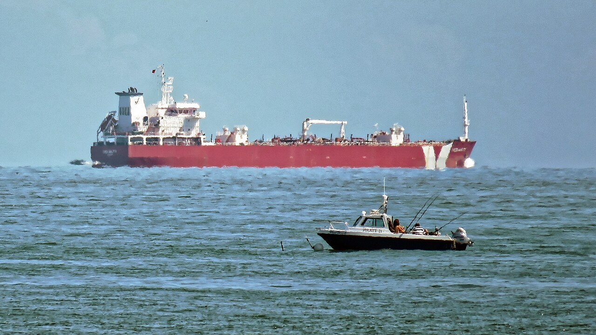
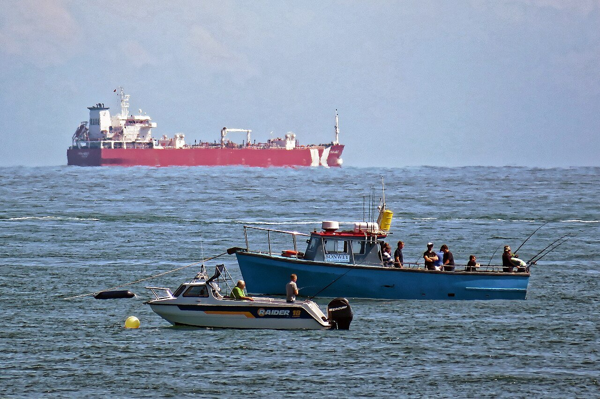
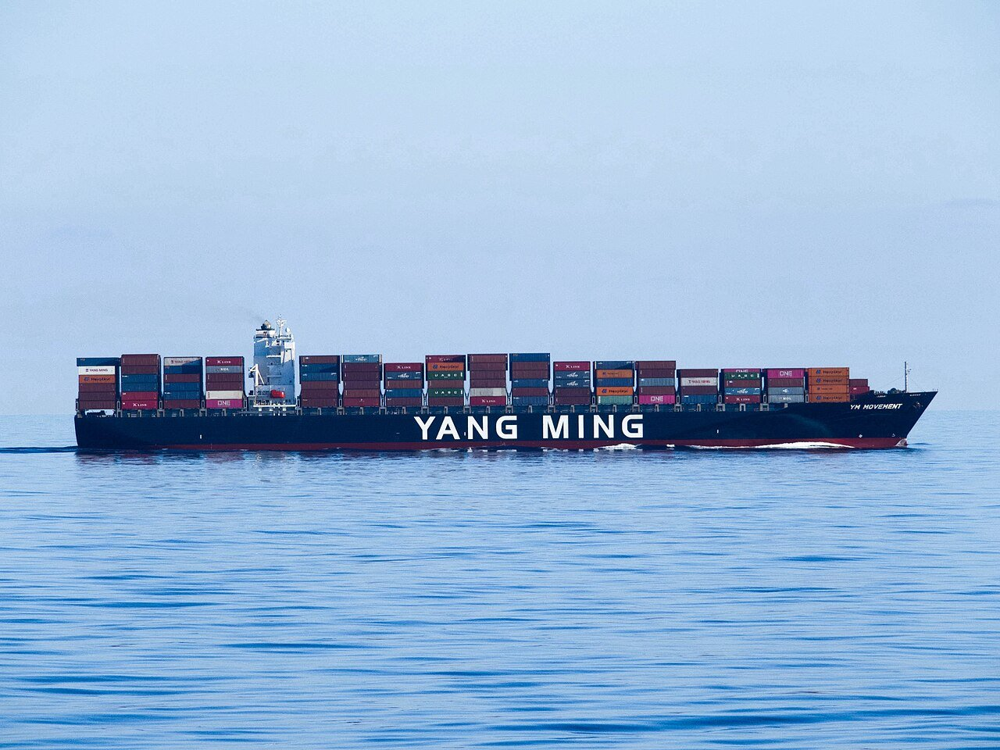

Modern Intelligence · Senior Machine Learning Engineer · 2022
Multimodal Retrieval for Maritime Awareness
Finding the same vessel across cameras, satellites, AIS, and text descriptions.
Overview
- Organization
- Modern Intelligence
- Role
- Senior machine learning engineer
- Period
- 2022
At Modern Intelligence I developed a custom multimodal retrieval system for maritime awareness. The core task was vessel re-identification: given one observation of a vessel, find the same vessel in other observations, across time, viewpoints, and sensors.
The system is built on a CLIP-style contrastive image-text model, so that camera imagery, satellite and aerial imagery, and text descriptions share one embedding space and any of them can be the query. AIS transponder data supplies vessel identity for training and narrows the search at query time.
Query observation: which vessel is this?

Ranked gallery matches



01
Contrastive Image-Text Training
A CLIP-style model trains an image encoder and a text encoder together: an image and its matching description are pulled together in the embedding space, and mismatched pairs are pushed apart. Re-identification then becomes a nearest-neighbor search over a gallery of vessel observations.
02
AIS for Labels and Candidate Filtering
AIS broadcasts give each vessel's identity, position, and time. That identity provided the ground-truth labels for imagery, and at query time the position and time of an observation narrowed the gallery to the vessels it could plausibly be.
03
Measuring Re-identification
I developed the standard set of performance metrics: rank-k accuracy, reported as a cumulative match characteristic (CMC), for how often the correct vessel appears in the top k results, and mean average precision (mAP) for how highly all of a vessel's true matches are ranked.
04
Reproducible by Design
I implemented a scalable system for dataset versioning, model versioning, experiment tracking, and production monitoring. Datasets were versioned with DVC and experiments tracked in Weights and Biases, so that any result could be traced back to the exact data and model that produced it.
Photos from Wikimedia Commons: Tanker off Broadstairs (1) by Acabashi (CC BY-SA 4.0); (2) by Acabashi (CC BY-SA 4.0); (3) by Acabashi (CC BY-SA 4.0); Yang Ming container ship by RH (CC BY-SA 4.0); container ship Marus by W. Bulach (CC BY-SA 4.0); radar satellite image by Umbra Lab, Inc. (CC BY 4.0); AIS chart by Pline (public domain).
Next project